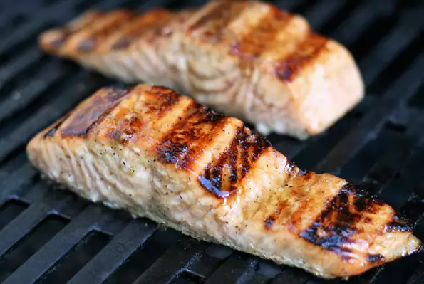

Salmon

Description
Here's a recipe for Glazed Salmon passed down from my great great great grandma who loved grabbing salmon right out of the river and cooking it up fresh.
Ingredients:
- 2 tablespoons dark brown sugar
- 2 tablespoons apple cider vinegar
- 2 tablespoons olive oil
- 1 teaspoon Dijon mustard
- ½ teaspoon coarsely ground black pepper
- 6 (3 ounce) fillets salmon fillets, thawed
Steps!
- Combine brown sugar, apple cider vinegar, olive oil, Dijon mustard, and pepper in a bowl for the marinade.
- Place salmon fillets into a shallow glass dish and pour 1/2 of the marinade over the fish. Reserve remaining marinade. Cover and refrigerate for 1 hour.
- Preheat an outdoor grill for medium heat and lightly oil the grate. Discard marinade from the glass dish.
- Grill salmon, brushing with reserved marinade several times, until it flakes easily with a fork, 4 to 6 minutes.
Acknowledgements
This whole website is just HTML practice, here is a link to the actual recipe.